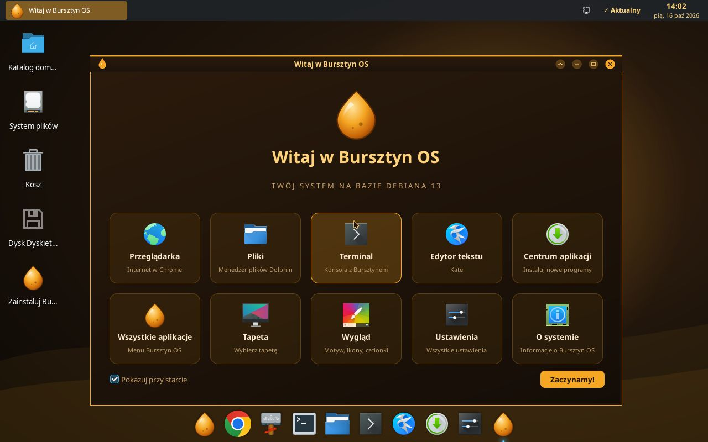
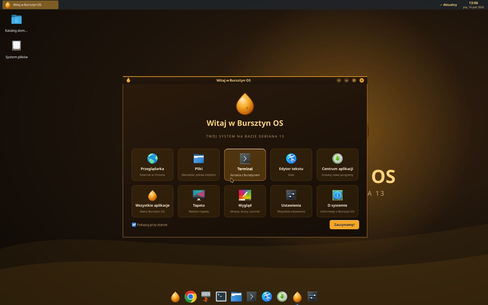
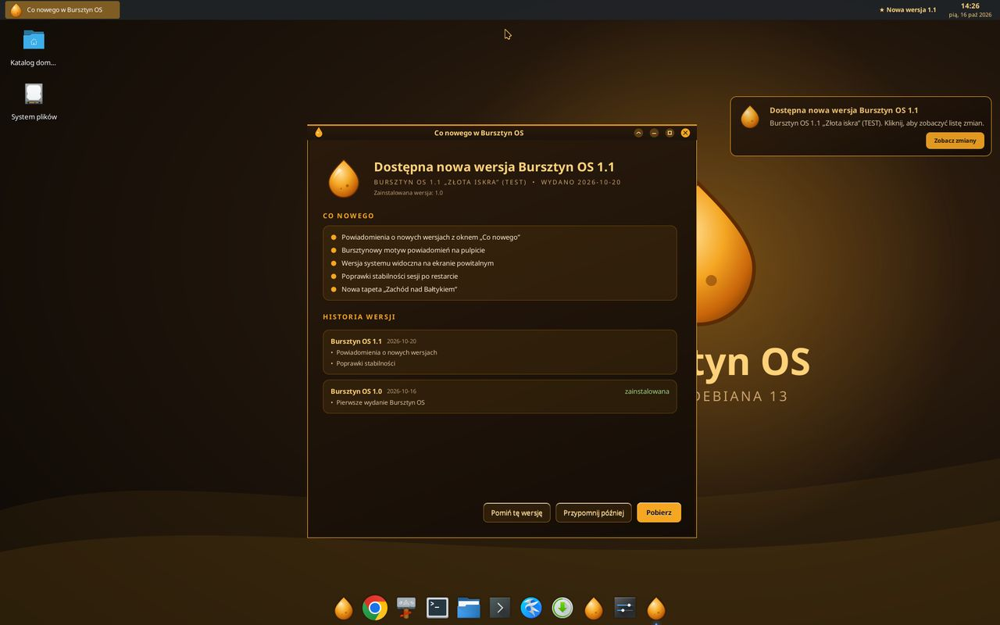
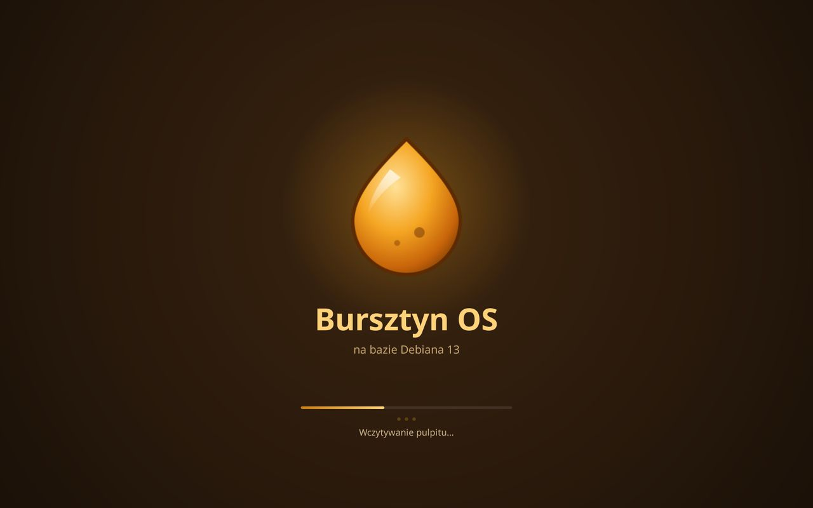
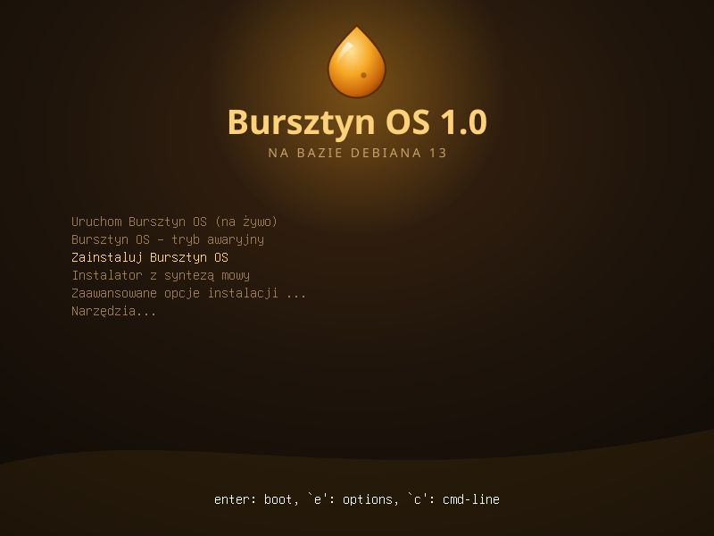
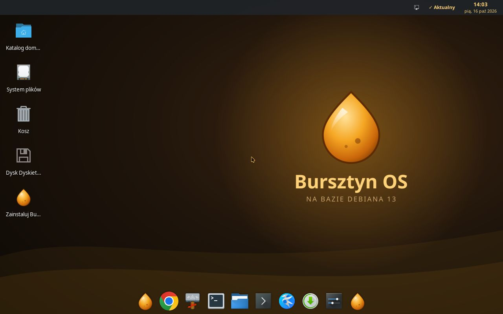

Witaj, Bursztyn OS 1.0!
Bursztyn OS 1.0 „Pierwsza kropla” to pierwsze wydanie naszego ciepłego, bursztynowego systemu na bazie Debiana 13 (trixie).
Bursztyn OS, ciepły i lekki system na bazie Debiana 13

Stabilna baza Debiana 13 i dopracowany, ciepły pulpit, gotowy do pracy od pierwszego uruchomienia.
Dock na dole ekranu, a bursztynowe Menu ze wszystkimi aplikacjami zawsze po lewej stronie.
Zegar, data z kalendarzem, zasobnik systemowy i wskaźnik dostępnych aktualizacji.
Polski interfejs, polskie tłumaczenia aplikacji i polski instalator.
Ciemny motyw Breeze uzupełniony o własny bursztynowy motyw okien.
Ciemny kursor z bursztynowym obrysem, dobrze widoczny na każdym tle.
Zestaw 17 dźwięków Bursztyn OS dla powiadomień i zdarzeń systemu.
Skróty do plików, terminala, ustawień, tapet i Centrum aplikacji.
Graficzne instalowanie programów i opcja „Zaznacz wszystkie aktualizacje”.
Codzienne sprawdzanie aktualizacji i powiadomienie o nowej wersji z listą zmian.
Animowane logo z paskiem postępu oraz motyw Plymouth.
Dolphin, Konsole, Kate, Okular, Gwenview, Ark, Spectacle i KCalc.
Obraz ISO na żywo z instalatorem, uruchamiany w trybie BIOS i UEFI.
Kliknij zrzut, aby go powiększyć.





Sześć tapet do wyboru w ustawieniach systemu. Kliknij, aby pobrać w rozdzielczości 1920×1200.
Bursztyn OS 1.0 „Pierwsza kropla” to pierwsze wydanie naszego ciepłego, bursztynowego systemu na bazie Debiana 13 (trixie).
Pierwsze wydanie Bursztyn OS
14 nowości w tym wydaniu.
Uruchom Bursztyn OS z pendrive’a bez instalowania i zainstaluj, kiedy Ci się spodoba.
⤓ Przejdź do pobierania